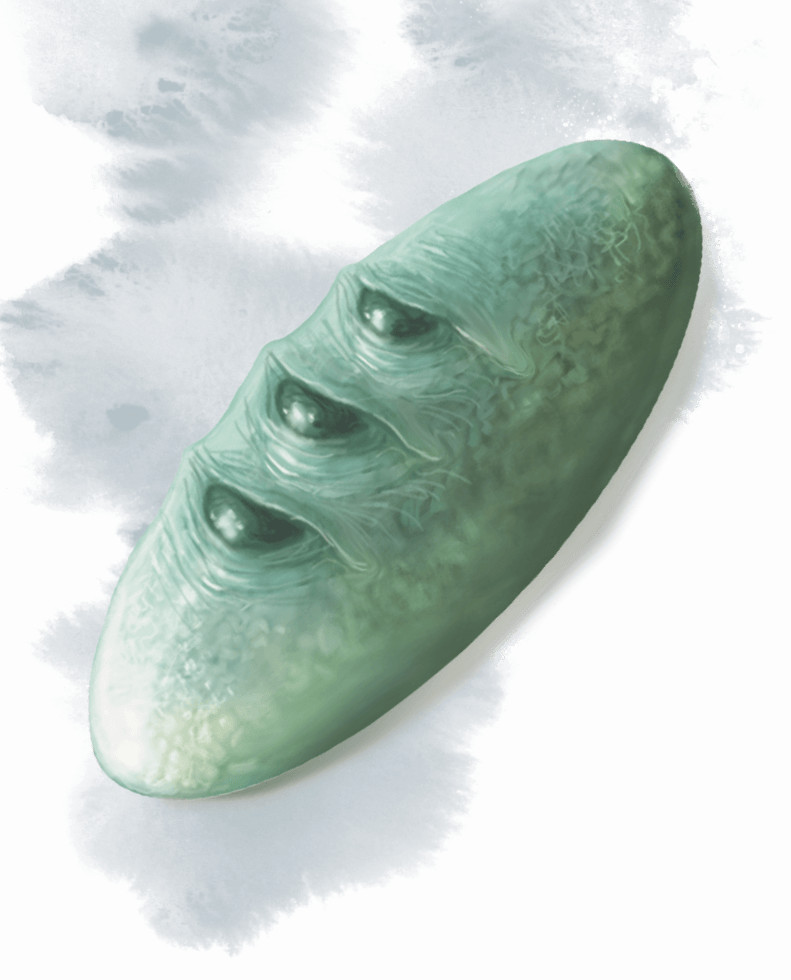

Pierre de Golorr
[ Stone of Golorr ]
Objet merveilleux, artéfact (nécessite un lien)
La pierre de Golorr est une pierre brillante de couleur gris verdâtre qui tient dans la paume de votre main. La pierre est en fait un aboleth nommé Golorr, transformé par magie en un objet.
Propriétés aléatoires. La pierre de Golorr possède un certain nombre de propriétés déterminées aléatoirement :
• 1 propriété bénéfique mineure
• 1 propriété néfaste mineure
Légende. La pierre de Golorr possède 3 charges et récupère 1d3 charges dépensées chaque jour à l'aube. Si vous tenez la pierre, vous pouvez dépenser 1 de ses charges pour lancez le sort mythes et légendes. En utilisant la pierre pour lancer mythes et légendes, vous communiquez directement avec l'aboleth, et celui-ci partage ses connaissances avec vous. L'aboleth ne peut pas vous mentir, mais l'information qu'il fournit est souvent cryptique ou vague. L'aboleth sait où le secret de Lord Neverember (le coffre-fort) est situé. Il sait aussi que trois clés sont nécessaires pour ouvrir le coffre-fort et qu'un dragon d'or nommé Aurinax habite le caveau et garde ses trésors.
Mémoire défaillante. Quand votre lien avec la pierre de Golorr se termine, vous devez faire un jet de sauvegarde de Sagesse DD 16. En cas d'échec, vous perdez toute mémoire de la pierre en votre possession et toutes les connaissances qu'elle vous a transmises. Un sort de délivrance des malédictions lancé sur vous a 20 % de chance de restaurer les connaissances et les souvenirs perdus, et un sort de restauration supérieur le fait automatiquement.
Conscience. La pierre de Golorr est un objet magique intelligent loyal maléfique doté d'une Intelligence de 18, d'une Sagesse de 15 et d'un Charisme de 18. Elle entend et possède la vision dans le noir à 36 mètres. Elle peut communiquer par télépathie avec la créature qui lui est liée, tant que cette créature comprend au moins une langue. En outre, l'aboleth apprend les plus grands désirs de toute créature qui communique télépathiquement avec la pierre. La pierre de Golorr a soif d'informations et préfère ne pas rester dans les griffes d'une créature trop longtemps. Chaque fois que la pierre désire un nouveau propriétaire, elle demande à être donné à une autre créature intelligente aussi vite que possible. Si ses exigences sont ignorées, elle essaie de prendre le contrôle de son propriétaire.
Personnalité. La pierre de Golorr a un intelligence extraterrestre qui est à la fois dominatrice et avide de connaissances. Elle se considère comme un dieu sans âge et immortel.
Détruire la pierre. Sous forme de pierre, l'aboleth n'est pas une créature et n'est pas sujet aux effets qui ciblent des créatures. La pierre de Golorr est immunisée contre tout dommage. Lancer un sort d'aversion/attirance sur la pierre la détruit si l'effet aversion est sélectionné et le sort est destiné à repousser les aberrations. Quand le sort est lancé de cette manière, la pierre se transforme en mucus et est détruite. Golorr, l'aboleth, apparaît alors dans un espace inoccupé dans un rayon de 9 mètres autour des restes de la pierre. Exaspéré par la destruction de la pierre, il attaque toutes les autres créatures qu'il peut voir.
Propriétés aléatoires. La pierre de Golorr possède un certain nombre de propriétés déterminées aléatoirement :
• 1 propriété bénéfique mineure
• 1 propriété néfaste mineure
Légende. La pierre de Golorr possède 3 charges et récupère 1d3 charges dépensées chaque jour à l'aube. Si vous tenez la pierre, vous pouvez dépenser 1 de ses charges pour lancez le sort mythes et légendes. En utilisant la pierre pour lancer mythes et légendes, vous communiquez directement avec l'aboleth, et celui-ci partage ses connaissances avec vous. L'aboleth ne peut pas vous mentir, mais l'information qu'il fournit est souvent cryptique ou vague. L'aboleth sait où le secret de Lord Neverember (le coffre-fort) est situé. Il sait aussi que trois clés sont nécessaires pour ouvrir le coffre-fort et qu'un dragon d'or nommé Aurinax habite le caveau et garde ses trésors.
Mémoire défaillante. Quand votre lien avec la pierre de Golorr se termine, vous devez faire un jet de sauvegarde de Sagesse DD 16. En cas d'échec, vous perdez toute mémoire de la pierre en votre possession et toutes les connaissances qu'elle vous a transmises. Un sort de délivrance des malédictions lancé sur vous a 20 % de chance de restaurer les connaissances et les souvenirs perdus, et un sort de restauration supérieur le fait automatiquement.
Conscience. La pierre de Golorr est un objet magique intelligent loyal maléfique doté d'une Intelligence de 18, d'une Sagesse de 15 et d'un Charisme de 18. Elle entend et possède la vision dans le noir à 36 mètres. Elle peut communiquer par télépathie avec la créature qui lui est liée, tant que cette créature comprend au moins une langue. En outre, l'aboleth apprend les plus grands désirs de toute créature qui communique télépathiquement avec la pierre. La pierre de Golorr a soif d'informations et préfère ne pas rester dans les griffes d'une créature trop longtemps. Chaque fois que la pierre désire un nouveau propriétaire, elle demande à être donné à une autre créature intelligente aussi vite que possible. Si ses exigences sont ignorées, elle essaie de prendre le contrôle de son propriétaire.
Personnalité. La pierre de Golorr a un intelligence extraterrestre qui est à la fois dominatrice et avide de connaissances. Elle se considère comme un dieu sans âge et immortel.
Détruire la pierre. Sous forme de pierre, l'aboleth n'est pas une créature et n'est pas sujet aux effets qui ciblent des créatures. La pierre de Golorr est immunisée contre tout dommage. Lancer un sort d'aversion/attirance sur la pierre la détruit si l'effet aversion est sélectionné et le sort est destiné à repousser les aberrations. Quand le sort est lancé de cette manière, la pierre se transforme en mucus et est détruite. Golorr, l'aboleth, apparaît alors dans un espace inoccupé dans un rayon de 9 mètres autour des restes de la pierre. Exaspéré par la destruction de la pierre, il attaque toutes les autres créatures qu'il peut voir.
Adventures (Dragon Heist)
